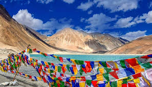

Highlights
- Pangong Lake: Famous for its crystal clear blue water, changing colors throughout the day.
- Nubra Valley: Known for sand dunes, Bactrian camels, and dramatic mountain landscapes.
- Leh Palace: A historic palace offering panoramic views of the town and surrounding mountains.
- Magnetic Hills: An optical illusion where vehicles appear to roll uphill.
- Monastries Tour: Visit ancient monasteries like Hemis, Thiksey, and Diskit, rich in culture and history.
- Khardung La Pass: One of the highest motorable roads in the world, perfect for adventure seekers.
- Zanskar Valley: Stunningly scenic with river rafting, trekking, and vibrant local culture.



Ladakh with Hanle
Day 1: Arrival in Leh
- Activities: Acclimatization and local sightseeing
- Highlights: Shanti Stupa, Leh Palace, and Leh Market
- Rest and acclimatize to avoid altitude sickness.
Day 2: Leh - Sham Valley Excursion
- Highlights: Magnetic Hill, Gurudwara Pathar Sahib, Hall of Fame Museum, and Confluence of the Zanskar & Indus rivers.
- Enjoy the stunning landscape on this short drive from Leh. Return to Leh by evening.
Day 3: Leh to Nubra Valley
- Highlights: Khardung La Pass, Diskit Monastery, Hunder Sand Dunes
- Activities: Ride a Bactrian camel, explore Diskit Monastery
- Overnight: Stay in Hunder or Diskit
Day 4: Nubra Valley to Pangong Lake via Shyok
- Route: Scenic drive via the Shyok River route, known for its rugged beauty
- Highlights: Pangong Lake with its surreal color changes and dramatic scenery
- Activities: Relax by the lake, photography, and stargazing at night
- Overnight: Stay in camps near Pangong Lake
Day 5: Pangong Lake to Hanle
- Route: Scenic drive to Hanle through Changthang Valley
- Highlights: Hanle Observatory (one of the world’s highest observatories), remote landscapes, traditional Changpa nomadic culture
- Activities: Observatory visit, exploration of Hanle village
- Overnight: Stay in a homestay in Hanle
Day 6: Hanle to Leh via Tso Moriri
- Route: Drive through beautiful landscapes of the Changthang Plateau, visiting Tso Moriri Lake on the way back to Leh
- Highlights: Tso Moriri Lake, a high-altitude lake with serene, pristine beauty
- Activities: Photography, explore the lakeside, short walks
Day 7: Departure from Leh
- Transfer to Leh Airport for departure